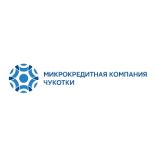
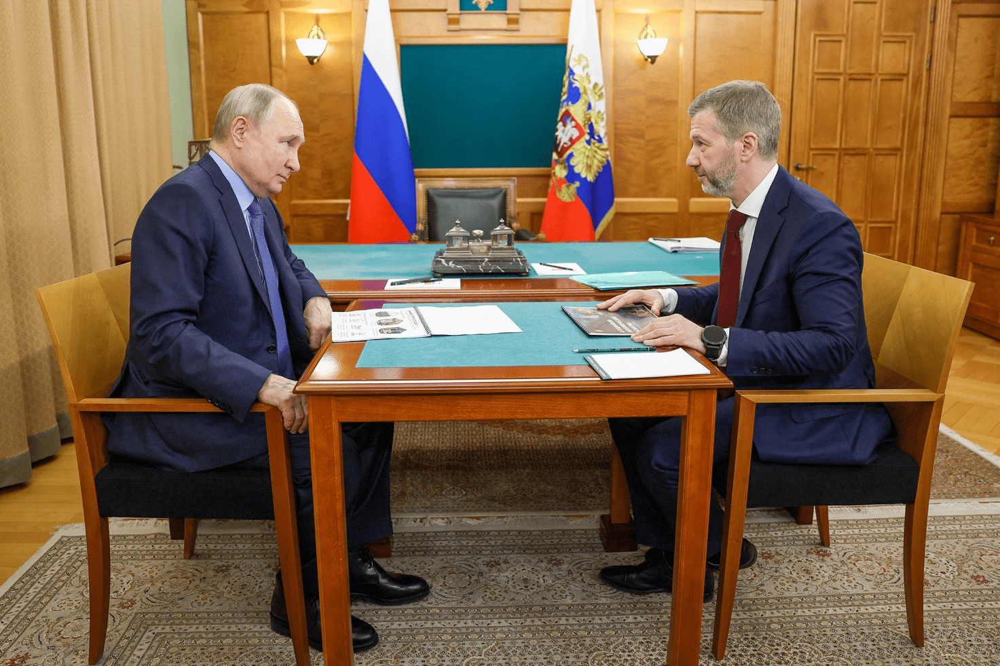
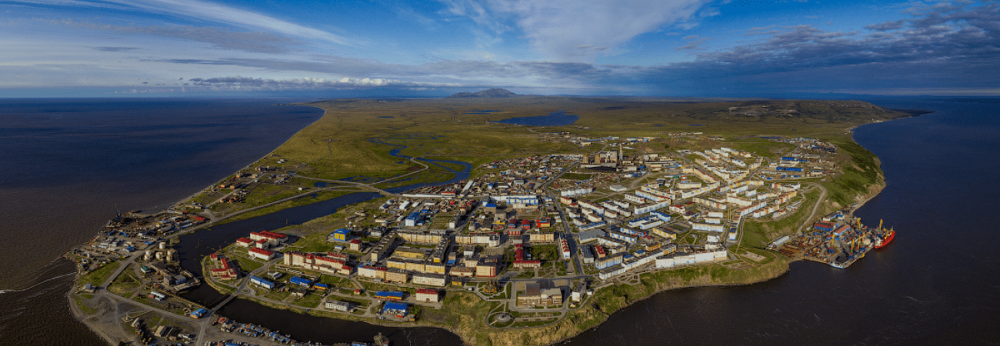

Финансовые и нефинансовые меры
поддержки для МСП, мероприятия, консультации и другие услуги.
+7 (800) 2010 800
mail@fond87.ru

МКК ЧУКОТКА
Финансовая поддержка,
выдача микрозаймов.
+7 (800) 2010 800
+ 6 93 32
mkk@mkk87.ru
КРДВ ЧУКОТКА
Единое окно для обращений инвесторов, сопровождение
резидентов преференциальных режимов.
+7 (924) 666 32 00
info.chukotka@erdc.ru
Промпарк “Анадырь”
Современная площадка 8.5 Га, для размещения
резидентов, основной профиль парка — пищевая промышленность.
+7 (924) 665 80 63
mail@prompark87.ru
prompark87.ru
Полезные ресурсы
МСП.РФ
Национальные проекты РФ
Национальный рейтинг состояния инвестиционного климата
Форум « Сильные идеи для нового времени» Предложить свою идею можно до 31 января!
Инвестиционный портал Чукотского АО
Условия преференциальных режимов для бизнеса.
Финансовые и нефинансовые меры поддержки МСП.
Чеклисты различных этапов ведения проекта и пр.
Инвестиционный портал Чукотского АО
Условия преференциальных режимов для бизнеса.
Финансовые и нефинансовые меры поддержки МСП.
Чеклисты различных этапов ведения проекта и пр.
Новости
Губернатор Чукотки рассказал об итогах совещания с Президентом
России
Губернатор Чукотского автономного округа подвёл итоги совещания с
Президентом России Владимиром Путиным в Анадыре. Глава региона рассказал о том, что на встрече с
Главой государства обсуждались вопросы, которые касаются как отдельных населённых пунктов, так и
всего округа.
Подробнее
Стартовал приём заявок на форум «Сильные идеи для нового времени»
Агентство стратегических инициатив по продвижению новых проектов (АСИ) и
Фонд Росконгресс объявили о старте приёма заявок на форум «Сильные идеи для нового времени».
Подробнее
Чукотка и «Национальный центр государственно-частного партнерства»
подписали соглашение о сотрудничестве
7 декабря 2023 года в Москве состоялась церемония подписания соглашения
о сотрудничестве между Правительством Чукотского автономного округа и Автономной некоммерческой
организацией «Национальный Центр развития государственно-частного партнерства».
Подробнее
Правительство утвердило долгосрочные планы комплексного
социально-экономического развития 16 дальневосточных городов до 2030 года
Мастер-планы регионов Дальнего востока предусматривают: обновление
жилищного фонда,
строительство социальных объектов, благоустройство территорий, модернизацию транспортной и
коммунальной инфраструктуры, развитие курортных зон.
Подробнее
Электронная приёмная
Заполните форму обратной связи, оставьте ваш запрос
Спасибо!
Ваше обращение успешно отправлено.
Губернатор Чукотки рассказал об итогах совещания с Президентом России
Следующая новость

Губернатор Чукотского автономного округа подвёл итоги
совещания с Президентом России Владимиром Путиным в Анадыре. Глава региона рассказал о том,
что на встрече с Главой государства обсуждались вопросы, которые касаются как отдельных
населённых пунктов, так и всего округа.
«Такого федерального внимания
наш округ не получал никогда. Сейчас нам необходимо оперативно отработать в Москве, чтобы
добиться решений в министерствах в кратчайшие сроки», – сказал Владислав Кузнецов.
Глава региона сообщил, что будет
проработан один из самых проблемных вопросов, который касается внутренних авиаперевозок.
«Делаем сетку таких перелетов
удобнее: чтобы из каждого населенного пункта, охваченного маршрутной сетью, можно было минимум
один раз в неделю гарантированно добраться до Билибино, Певека, Эгвекинота, Провидения и др., а
оттуда – гарантированно один раз в неделю вылететь в Анадырь. Рассчитываем и на поддержку
федерального бюджета – в этом случае деньги регионального бюджета высвободятся и пойдут на
социальную инфраструктуру: будем строить больше школ, детсадов, повышать соцпособия», –
рассказал Губернатор.
Что касается медицинского
обслуживания, то планируется увеличить количество специалистов для оказания
высококвалифицированной медпомощи, а медицинские медучреждения в Певеке и Провидения
модернизировать. Ещё один фактор для улучшения жизни людей – рост добычи полезных ископаемых в
округе.
«Мы один из важных регионов страны
по разведанным запасам. Это должно приносить пользу жителям округа. При этом разведано у нас
только 32% территории. Попросил федерального финансирования на дополнительную геологоразведку.
Что она нам даст? Новые разведанные запасы – увеличение добычи – новые налоги в бюджет. То есть
новые и расширенные социальные программы для поддержки жителей нашего округа», – сообщил
Владислав Кузнецов.
Регион получит поддержку и в решении
проблемы переправы через Анадырский лиман. Ранее было принято решение о выделении средств на
покупку 5 аэролодок. Кроме того, Владимир Путин дал указание профильному министерству отработать
и другие варианты организации переправы лиман.
Среди обсуждаемых мер поддержки
многодетных семей – отменена налога на жилье, выплата 1 млн на погашение ипотеки, а также
создание механизма программы льготного кредитования на покупку автомобиля. Также поднимался
вопрос продления субсидированных тарифов на электроэнергию для предпринимателей Чукотки.
По распоряжению Президента
подготовлены предложения в программу по поддержке национальных языков и культуры. Также в округе
с 1 февраля будут увеличены зарплаты для оленеводов на 50% и для морзверобоев – на 20%.
Что касается сферы образования, то в
рамках программы «Земский учитель» регион рассчитывает привлечь ещё больше квалифицированных
преподавателей.
«Далеко не все темы мы можем решить
сразу, но мы будем их решать. Поэтому мне важна обратная связь – ваши вопросы и предложения.
Чукотка должна использовать поддержку на федеральном уровне для того, чтобы обеспечить
качественное улучшение жизни», – подчеркнул Губернатор.
Стартовал приём заявок на форум «Сильные идеи для нового времени»
Следующая новость
Стартовал приём заявок на форум «Сильные идеи для
нового времени» Агентство стратегических инициатив по продвижению новых проектов (АСИ) и
Фонд Росконгресс объявили о старте приёма заявок на форум «Сильные идеи для нового
времени».
Цель форума – найти и поддержать
перспективные проекты и предложения, которые будут способствовать развитию страны,
укреплению суверенитета и достижению стратегических целей развития России..
Подать заявку может любой житель
России до 31 января 2024 года. Для этого необходимо зарегистрироваться на платформе форума и
выбрать нужную номинацию на сайте идея.росконгресс.рф.
Инициативы принимаются по семи
тематическим блокам (номинациям): «Качество жизни населения», «Развитие экономики и
предпринимательства», «Пространство для жизни», «Эффективный труд и образование»,
«Технологическое развитие», «Экономика данных и цифровые решения» и «Эффективное
государство».
Эксперты выберут из них топ-1000 и
топ-100 инициатив, лучшие из которых в марте будут представлены руководству страны. Порядка
тысячи лучших проектов, выдвинутых на платформе, ежегодно получают поддержку от АСИ,
администраций регионов, бизнеса и партнёров форума.
Чукотка и «Национальный центр государственно-частного партнерства» подписали
соглашение о сотрудничестве
Следующая новость
7 декабря 2023 года в Москве состоялась церемония
подписания соглашения о сотрудничестве между Правительством Чукотского автономного округа и
Автономной некоммерческой организацией «Национальный Центр развития государственно-частного
партнерства». Подписи под документом поставили временно исполняющий обязанности заместителя
Губернатора – Председателя Правительства округа Антон Яремчук и Старший управляющий директор
Национального центра ГЧП Максим Ткаченко.
Миссия центра - содействие
привлечению инвестиций в развитие общественной инфраструктуры для повышения качества жизни
людей.
Соглашение направлено на внедрение в
регионе новых инструментов проектного управления и принципов клиентоориентированности при
подготовке и реализации инвестиционных проектов ГЧП на территории Чукотки. В рамках достигнутых
договоренностей Национальный центр ГЧП предоставит свою «базу знаний», окажет методическую и
информационную поддержку по упаковке проектов ГЧП, в том числе концессионных соглашений.
Кроме того, планируется совместная
работа по отбору пилотных перспективных проектов, в отношении которых будут апробированы новые
инструменты проектного управления. Также в планах повышение квалификации специалистов, основными
задачами которых является содействие в формировании благоприятного инвестиционного климата в
регионе, сопровождение инвестиционных проектов в формате государственно-частного
партнерства.
Основная задача проектов ГЧП – быть
полезными населению регионов. Реализация новых подходов к проектному управлению позволит
увеличить количество запускаемых инвестиционных проектов, направленных на создание объектов
социальной инфраструктуры и сократить сроки на их подготовку и запуск, а также позволит повысить
позиции Чукотского автономного округа в Национальном рейтинге состояния инвестиционного
климата.
Правительство утвердило долгосрочные планы комплексного
социально-экономического развития 16 дальневосточных городов до 2030 года
Следующая новость

Мастер-планы регионов Дальнего востока
предусматривают:
обновление жилищного фонда,
строительство социальных объектов,
благоустройство территорий,
модернизацию транспортной и коммунальной инфраструктуры,
развитие курортных зон.
Комплексные планы подготовлены
для Анадыря, Арсеньева, Биробиджана, Благовещенска, Белогорска, Большого Камня,
Владивостока, Комсомольска-на-Амуре, Краснокаменска, Нерюнгри, Находки, Магадана,
Уссурийска, Свободного, Хабаровска и Якутска.
Благодаря мастер-планам:
В Магадане в 2024 году будет завершено строительство областного родильного дома на 80 коек с
женской консультацией и дневным стационаром на 10 мест.
Во Владивостоке, на острове Русский, в 2025–2026 годах планируется строительство академии
тенниса. В Якутске на 2025–2029 годы запланировано возведение Всемирного центра мамонта.
В плане развития Благовещенска на 2025 год предусмотрено завершение работ по строительству
трансграничной канатно-подвесной дороги через Амур.
В общей сложности комплексные планы
развития включают 743 различных мероприятия.
Общий объем финансирования – 3,5
трлн рублей. Из них 1,2 трлн рублей составят средства федерального бюджета, 400 млрд рублей –
средства бюджетов регионов, 1,9 трлн рублей – внебюджетные источники.
Решение принято по поручению
Президента. Всего мастер-планы разработаны для 25 дальневосточных городов.